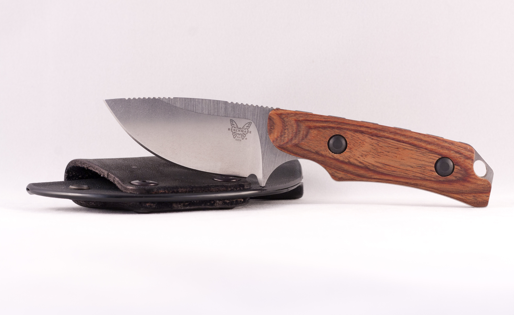
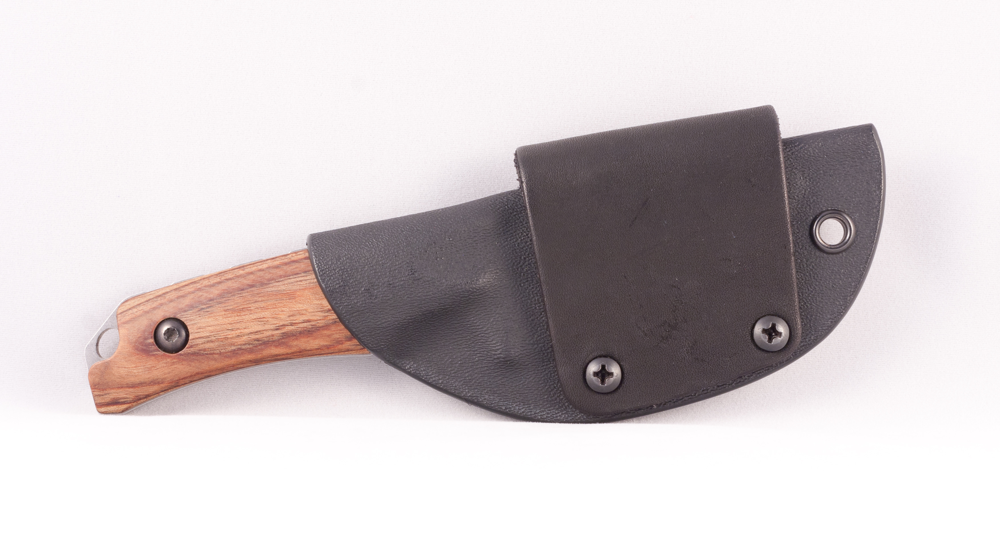

Benchmade Hidden Canyon Hunter


A compact knife for those who are looking to save space, it's truly about as much knife as you'll ever need for processing your harvest thanks to the large applied blade radius that excels at skinning and meat removal. Made in USA.
- Designer: Benchmade
- Mechanism: AXIS®
- Action: Fixed
- Blade Length: 2.67" (6.78cm)
- Blade Thickness: 0.140" (3.56mm)
- Length: 6.32" (16.05cm)
- Dymondwood Handle
- Blade Steel: CPM-S30V (58-60 HRC)
- Weight: 3.53oz. (100.07g)
- Sheath Weight: 1.06oz. (30.05g)
Product ID: bmhiddencanyon
*Information courtesy of Benchmade.